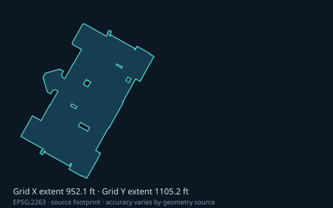
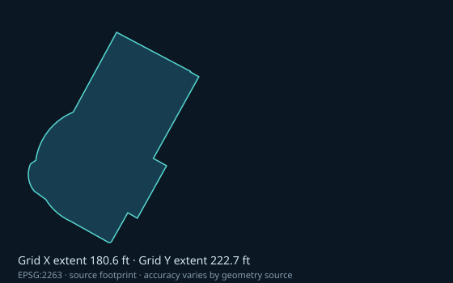
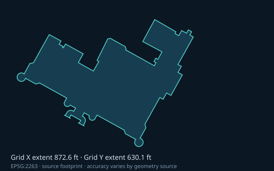
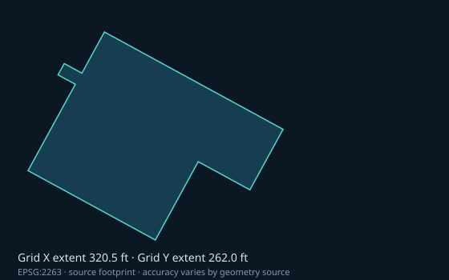
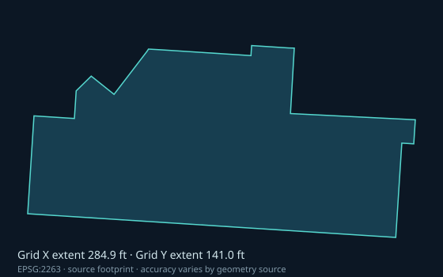
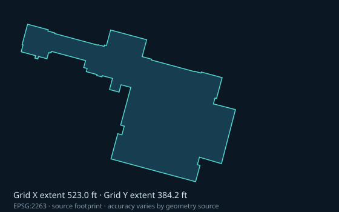
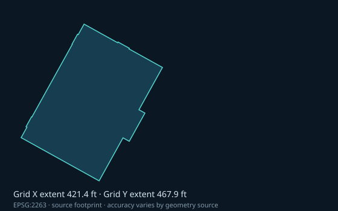
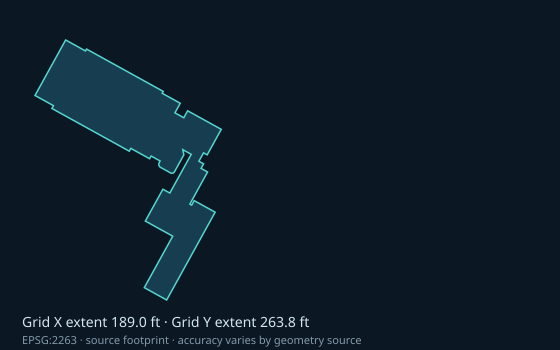
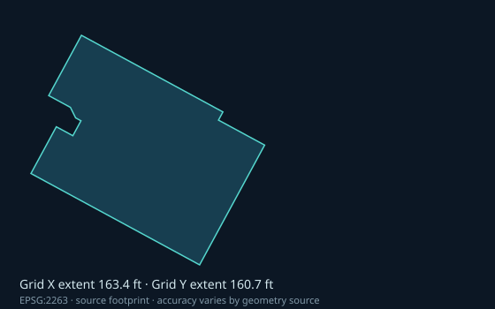
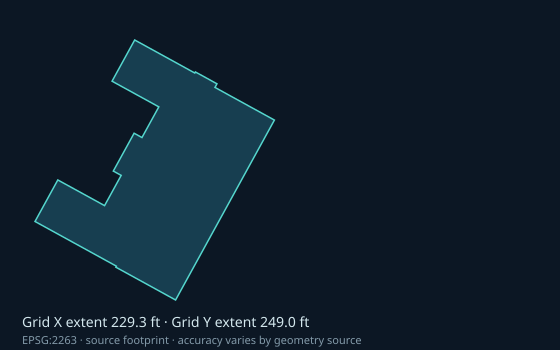

Photogrammetric footprints have a documented positional accuracy of approximately ±2 feet; manually updated footprints may be less accurate. These are projected 2D building outlines, with campus identity still requiring review. LiDAR tiles are catalogued here, not yet processed into roof planes. AI-generated repairs would remain inferred.
PUBLIC DATA · IDENTITY NEEDS REVIEWMetropolitan Museum of Art
1000 Fifth Avenue, New York, NY 10028

BIN 1083810 · The Metropolitan Museum · Photogrammetric
LiDAR catalogue: 1 intersecting tiles. Points not inspected.
PUBLIC DATA · IDENTITY NEEDS REVIEWSolomon R. Guggenheim Museum
1071 Fifth Avenue, New York, NY 10128

BIN 1046946 · Guggenheim Museum · Photogrammetric
LiDAR catalogue: 1 intersecting tiles. Points not inspected.
PUBLIC DATA · IDENTITY NEEDS REVIEWAmerican Museum of Natural History
200 Central Park West, New York, NY 10024

BIN 1083846 · unnamed source feature · Other (Manual)
LiDAR catalogue: 2 intersecting tiles. Points not inspected.
PUBLIC DATA · IDENTITY NEEDS REVIEWMuseum of Modern Art
11 West 53 Street, New York, NY 10019

BIN 1087646 · unnamed source feature · Other (Manual)
LiDAR catalogue: 1 intersecting tiles. Points not inspected.
PUBLIC DATA · IDENTITY NEEDS REVIEWWhitney Museum of American Art
99 Gansevoort Street, New York, NY 10014

BIN 1089239 · unnamed source feature · Photogrammetric
LiDAR catalogue: 3 intersecting tiles. Points not inspected.
PUBLIC DATA · IDENTITY NEEDS REVIEWBrooklyn Museum
200 Eastern Parkway, Brooklyn, NY 11238

BIN 3029667 · Brooklyn Museum · Photogrammetric
LiDAR catalogue: 1 intersecting tiles. Points not inspected.
PUBLIC DATA · IDENTITY NEEDS REVIEWNew York Public Library — Schwarzman Building
476 Fifth Avenue, New York, NY 10018

BIN 1034194 · New York Public Library · Photogrammetric
LiDAR catalogue: 1 intersecting tiles. Points not inspected.
PUBLIC DATA · IDENTITY NEEDS REVIEWCooper Hewitt, Smithsonian Design Museum
2 East 91st Street, New York, NY 10128

BIN 1046980 · unnamed source feature · Other (Manual)
LiDAR catalogue: 1 intersecting tiles. Points not inspected.
PUBLIC DATA · IDENTITY NEEDS REVIEWMorgan Library & Museum
225 Madison Avenue, New York, NY 10016

BIN 1017186 · unnamed source feature · Photogrammetric
LiDAR catalogue: 1 intersecting tiles. Points not inspected.
PUBLIC DATA · IDENTITY NEEDS REVIEWMuseum of the City of New York
1220 Fifth Avenue, New York, NY 10029

BIN 1074157 · unnamed source feature · Photogrammetric
LiDAR catalogue: 1 intersecting tiles. Points not inspected.